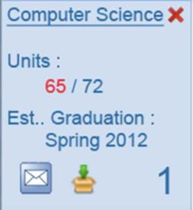

<!-- Coded by Mohammad Bhuiyan
			  Department of Computer Science
			  California State University Northridge. -->  

<html> 
<body style="background-color:brown;"> 
<center> <table bgcolor="HoneyDew" width=1024px height=90%> <tr><td> 

<SCRIPT>
var snowmax=35

// Set the colors for the snow. Add as many colors as you like
var snowcolor=new Array("#FFFFFF","#2F4F4F","#DEB887","#B8860B","#FA8072") 

// Set the fonts, that create the snowflakes. Add as many fonts as you like
var snowtype=new Array("Times","Arial","Times","Verdana")

// Set the letter that creates your snowflake (recommended: * )
var snowletter="*"

// Set the speed of sinking (recommended values range from 0.3 to 2)
var sinkspeed=0.6

// Set the maximum-size of your snowflakes
var snowmaxsize=30

// Set the minimal-size of your snowflakes
var snowminsize=8

// Set the snowing-zone
// Set 1 for all-over-snowing, set 2 for left-side-snowing
// Set 3 for center-snowing, set 4 for right-side-snowing
var snowingzone=1

// Do not edit below this line 
var snow=new Array()
var marginbottom
var marginright
var timer
var i_snow=0
var x_mv=new Array();
var crds=new Array();
var lftrght=new Array();
var browserinfos=navigator.userAgent
var ie5=document.all&&document.getElementById&&!browserinfos.match(/Opera/)
var ns6=document.getElementById&&!document.all
var opera=browserinfos.match(/Opera/)
var browserok=ie5||ns6||opera

function randommaker(range) {
        rand=Math.floor(range*Math.random())
    return rand
}

function initsnow() {
        if (ie5 || opera) {
                marginbottom = document.body.scrollHeight
                marginright = document.body.clientWidth-15
        }
        else if (ns6) {
                marginbottom = document.body.scrollHeight
                marginright = window.innerWidth-15
        }
        var snowsizerange=snowmaxsize-snowminsize
        for (i=0;i<=snowmax;i++) {
                crds[i] = 0;
            lftrght[i] = Math.random()*15;
            x_mv[i] = 0.03 + Math.random()/10;
                snow[i]=document.getElementById("s"+i)
                snow[i].style.fontFamily=snowtype[randommaker(snowtype.length)]
                snow[i].size=randommaker(snowsizerange)+snowminsize
                snow[i].style.fontSize=snow[i].size+'px';
                snow[i].style.color=snowcolor[randommaker(snowcolor.length)]
                snow[i].style.zIndex=1000
                snow[i].sink=sinkspeed*snow[i].size/5
                if (snowingzone==1) {snow[i].posx=randommaker(marginright-snow[i].size)}
                if (snowingzone==2) {snow[i].posx=randommaker(marginright/2-snow[i].size)}
                if (snowingzone==3) {snow[i].posx=randommaker(marginright/2-snow[i].size)+marginright/4}
                if (snowingzone==4) {snow[i].posx=randommaker(marginright/2-snow[i].size)+marginright/2}
                snow[i].posy=randommaker(2*marginbottom-marginbottom-2*snow[i].size)
                snow[i].style.left=snow[i].posx+'px';
                snow[i].style.top=snow[i].posy+'px';
        }
        movesnow()
}

function movesnow() {
        for (i=0;i<=snowmax;i++) {
                crds[i] += x_mv[i];
                snow[i].posy+=snow[i].sink
                snow[i].style.left=snow[i].posx+lftrght[i]*Math.sin(crds[i])+'px';
                snow[i].style.top=snow[i].posy+'px';

                if (snow[i].posy>=marginbottom-2*snow[i].size || parseInt(snow[i].style.left)>(marginright-3*lftrght[i])){
                        if (snowingzone==1) {snow[i].posx=randommaker(marginright-snow[i].size)}
                        if (snowingzone==2) {snow[i].posx=randommaker(marginright/2-snow[i].size)}
                        if (snowingzone==3) {snow[i].posx=randommaker(marginright/2-snow[i].size)+marginright/4}
                        if (snowingzone==4) {snow[i].posx=randommaker(marginright/2-snow[i].size)+marginright/2}
                        snow[i].posy=0
                }
        }
        var timer=setTimeout("movesnow()",50)
}

for (i=0;i<=snowmax;i++) {
        document.write("<span id='s"+i+"' style='position:absolute;top:-"+snowmaxsize+"'>"+snowletter+"</span>")
}
if (browserok) {
        window.onload=initsnow
}

</SCRIPT> 

<!-- INTRODUCTION --> 
<h1 style="font-family:calibri; color:black;background-color:#D2691E"> WHAT IS GPAS? </h1>
<p style="font-family:calibri;font-size:16px;"> Graduation Path Analysis Scheduler is an interactive Degree 
Progress Report that lets undergraduate students of the Department of Computer Science to plan courses for 
future terms and see how they can satisfy degree requirements. It is an essential item to bring to your 
academic advisement session each semester. GPAS is an interesting academic planner because it: </p>  

<dd> <li style="font-family:calibri;font-size:16px;"> Shows the full path of academic progress. </li> </dd> 
<dd> <li style="font-family:calibri;font-size:16px;"> Easy to use and auto-generated. </li> </dd>
<dd> <li style="font-family:calibri;font-size:16px;"> Sequence of courses ensures that prerequisites are completed. </li> </dd> 
<dd> <li style="font-family:calibri;font-size:16px;"> Allows users to customize course plan, and save multiple plans. </li> </dd>
<dd> <li style="font-family:calibri;font-size:16px;"> Links to course descriptions and prerequisites. </li> </dd>
<dd> <li style="font-family:calibri;font-size:16px;"> Notifies courses that meet multiple requirements for graduation. </li> </dd> 


<!-- HOW TO GUIDE --> 

<h1 style="font-family:calibri; color:black; background-color:#D2691E"> HOW TO GUIDE </h1> 
<p style="font-family:calibri; color:green;"><marquee behavior=alternate scrolldelay=200>
<b><i> This is a tutorial only. No log in is required! </i></b></marquee> </p>

<!-- STEP 1 -->
<table bgcolor="indigo"> <tr> <td> 
<center><h3 style="font-family:calibri; color:white"><u> STEP I </u> </h3> </center> 
<center> <p style="font-family:calibri;font-size:16px;color:white"> Login to GPAS at www.gpas.edu with your username and password (Left). 
For the first time users, type your CSUN User ID & Password, CSUN Email address and Student ID to create an account (right). You will be 
logged in automatically after creating the account. </p> </td> </center> 
<td>  </td> </tr> </table> 


<!-- STEP 2 --> 
<hr> 
<table bgcolor="indigo"> <tr> <td> 
<center><h3 style="font-family:calibri; color:white"><u> STEP II </u> </h3> </center> 
<center> <p style="font-family:calibri;font-size:16px;color:white"> Your GPAS page displays. Click on the (+) icon to Add Path. 
</p> </td> </center> <td>  </td> </tr> </table>  

<!-- STEP 3 --> 
<hr> 
<table bgcolor="indigo"> <tr> <td> 
<center><h3 style="font-family:calibri; color:white"><u> STEP III </u> </h3> </center> 
<center> <p style="font-family:calibri;font-size:16px;color:white"> Select a major and type the information of 
when you enrolled at CSUN. They will generate a graduation path for your selected major. </p> </td> </center> 
<td>  </td> </tr> </table> 

<!-- STEP 4 --> 
<hr>
<table bgcolor="indigo"> <tr> <td> 
<center><h3 style="font-family:calibri; color:white"><u> STEP IV </u> </h3> </center> 
<center> <p style="font-family:calibri;font-size:16px;color:white"> An entire path to graduation is created and 
saved to your account. The blue buttons represent the courses which are compulsory in order to graduate in your 
major. The brown buttons represent particularly the GE courses, which you can select from a list of courses. </p> </td> </center>
<td>  </td> </tr> </table> 

<!-- STEP 5 --> 
<hr> 
<table bgcolor="indigo"> <tr> <td> 
<center><h3 style="font-family:calibri; color:white"><u> STEP V </u> </h3> </center> 
<center> <p style="font-family:calibri;font-size:16px;color:white"> This navigation pane shows your major, number of units 
you completed, and your estimated graduating semester. You can download this plan by clicking on the folder icon. Using the 
message icon, you can see the general information about the courses listed on your graduation path. </p> </td> </center> 
<td>  </td> 
<td>  </td> </td> </tr> </table> 

<!-- STEP 6 -->  
<hr> 
<table bgcolor="indigo"> <tr> <td> 
<center><h3 style="font-family:calibri; color:white"><u> STEP VI </u> </h3> </center> 
<center> <p style="font-family:calibri;font-size:16px;color:white"> If you need to customize our plan, drag courses from one
semester to another, and then GPAS will revise its plan automatically. You can also create and save multiple graduation plans. 
In this case, keep our recommended plan as it is, create a new plan, and then customize it as mentioned earlier. </p> </td> </center> 
<td>  </td> </tr> </table> 


<!-- STEP 7 --> 
<hr> 
<table bgcolor="indigo"> <tr> <td> 
<center><h3 style="font-family:calibri; color:white"><u> STEP VII </u> </h3> </center> 
<center> <p style="font-family:calibri;font-size:16px;color:white"> If a course is dragged to a location where the prerequisites 
have not been met, you will get an illegal move notification (red). Classes planned in the future where availability status is 
unknown show yellow notification.</p> </td> </center> <td>  </td> 
<td>  </td> </td> </tr> </table> 


<!-- CONCLUSION --> 
<hr> 
<center><p style="font-family:calibri; font-size:10px; color:black; background-color:#D2691E"> <b> FRUIT CUP INC @ Department of 
Computer Science, California State University Northridge, 18111 Nordhoff Street, Northridge, CA 91330/ Phone: 818-677-3398/ Fax: 
818-677-7208/Email: compsci@csun.edu | Updated on 11/11/2012 </b> </p> </center> 

</body> </center> </table> </html> 